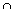

Solution 5.4
The set cl(A)  cl(B) is a closed set which contains A B and so it also contains cl(A B).
Take A = (0, 1) and B = (1, 2). Then A B = and cl(A B) = while cl(A) cl(B) = {1}.
If C  D then int(C) int(D) (since int(C) is an open subset of D). Also int(A B) int(A) and similarly int(A B) int(B). Hence int(A B) int(A) int(B).
D then int(C) int(D) (since int(C) is an open subset of D). Also int(A B) int(A) and similarly int(A B) int(B). Hence int(A B) int(A) int(B).
Also int(A) int(B) is an open subset of A B and hence lies in int(A B). Thus the two sets are equal.
int(A)  int(B) is an open subset of A B and hence lies inside int(A B).
int(B) is an open subset of A B and hence lies inside int(A B).
The other inclusion may fail. For example take A = [0, 1] and B = [1, 2] in R (with the usual topology). Then int(A B) = (0, 2) while int(A) int(B) = (0, 2) - {1}.